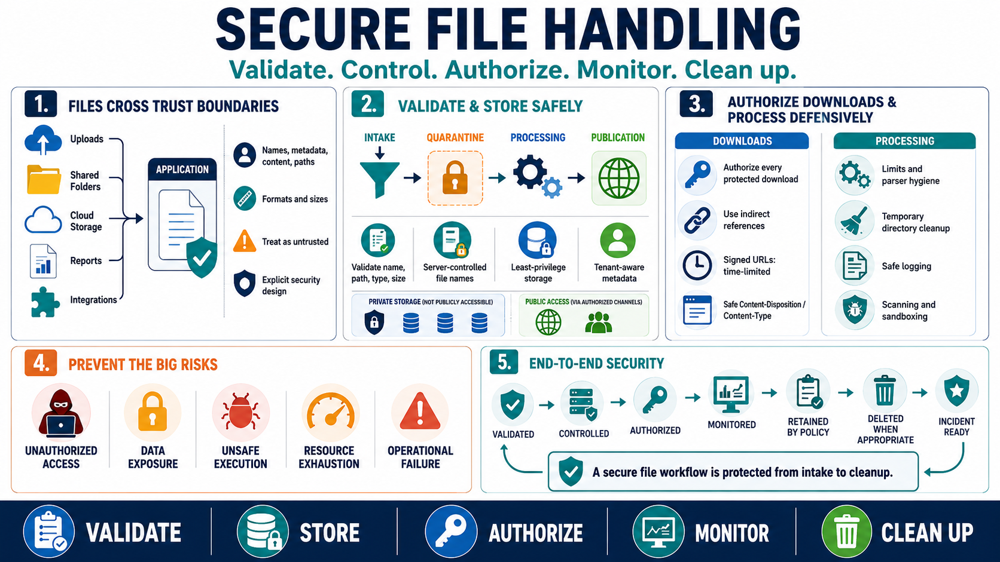

Course Summary
Connecting to LMS... Progress: in progress

Narration
Secure file handling protects data and systems when applications receive, store, process, and return files. Files can carry user-controlled names, metadata, content, paths, formats, and sizes. They can also represent evidence, exports, reports, backups, documents, and integration data. Because files move across trust boundaries, they deserve explicit security design rather than casual storage and retrieval.
Strong practice starts with validation. Treat names, paths, extensions, content type claims, sizes, metadata, and formats as untrusted until checked. Use safe server-controlled storage names, controlled paths, least-privilege permissions, tenant-aware metadata, and clear separation between intake, quarantine, processing, and publication. Keep sensitive uploads away from direct public access unless publication is intentional.
Download and processing workflows need the same care. Authorize every protected download, prefer indirect references, use signed URLs thoughtfully, set safe Content-Disposition and Content-Type behavior, and review exports for excessive data exposure. Process files defensively with limits, parser hygiene, temporary directory cleanup, and safe logging. Scanning and sandboxing can add useful layers when appropriate.
The final goal is to keep files from becoming a path to unauthorized access, data exposure, unsafe execution, resource exhaustion, or operational failure. File-handling systems should be observable, monitored, retained according to policy, deleted when appropriate, and ready for incident response. A file workflow is secure when it is validated, controlled, authorized, monitored, and cleaned up from end to end.